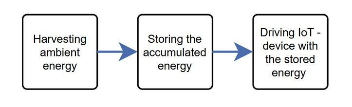
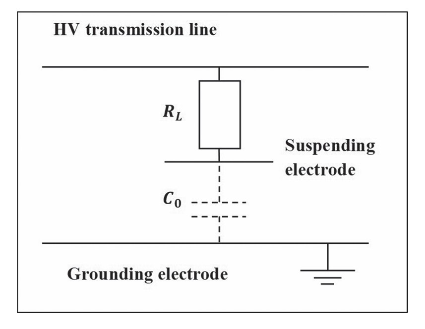
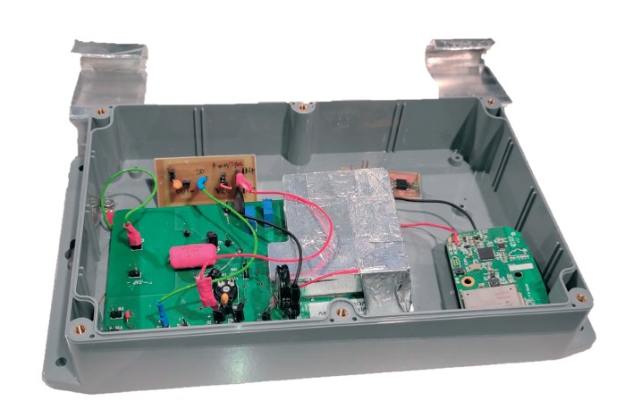
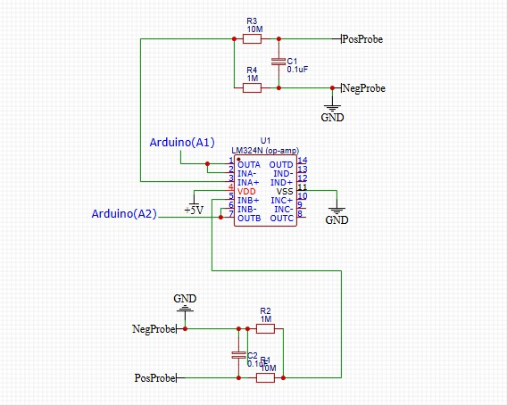

About
I have worked with embedded systems, sensor systems, and experimental energy harvesting research. My experience combines software (C++ and Python) and hardware development in real test environments.
Projects
Energy harvesting solutions for IoT devices
Developed energy harvesting solutions for IoT devices based on electrochemical, high voltage field, and thermoelectric phenomena.



Embedded Sensor Systems
Low-power voltage monitoring system using Arduino Nano and Raspberry Pi. Includes op-amp based signal conditioning.

Data Acquisition & Analysis
Python and MATLAB-based data pipelines for measurement analysis.
CAD modeling and 3D printing
Lots of ThinkerCad modeling and Ultimaker / Bambu Lab 3D printing.
Research project consortium building
Brought companies together, defined the project scope, and prepared co-funded research initiatives combining private industry funding and public funding.